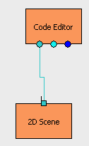
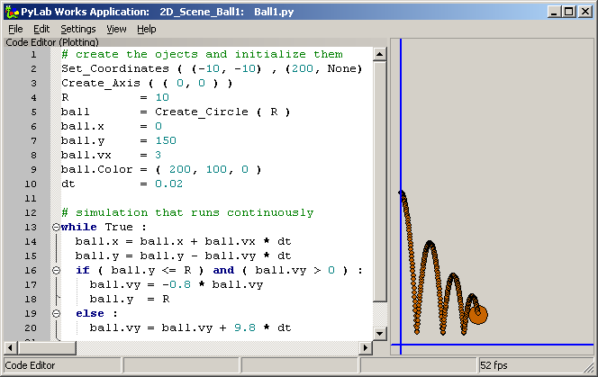

Demo: 2D_Scene_Ball1 (june 2009)
Brick, showing how the Design canvas can be used to make some 2D animations. There seems to be a bug in the canvas, because when drawing multiple moving objects, it becomes slow, for which there's no reason at all.

